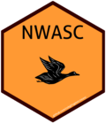

NWASC Segmentation R-package
Rob Fowler, robert_fowler@fws.gov



Introduction
The goal of nwasc is to segment survey data from the Northwest Atlantic Seabird Catalog (NWASC). This webpage serves as an overview of the nwasc package. The nwasc r-pack is located at https://github.com/robgf/nwasc.
To attach (install) the nwasc package to your library use the following code:
Please consider creating a fork to this repository. Requests for fixes or enhancements should be documented with a filled issue at https://github.com/robgf/nwasc/issues.
Plans are to relocate this repository within the U.S. FWS GitHub This site and accompanying documentation will be updated at that time.
Guiding Principles
The goal of this package is to have a
- Simple
- Well documented
code with:
- Reproducible results
for segmenting the transect and observation data contained in the NWASC]. Request or submissions of data from the NWASC should be made following the directions on the NWASC website.
Organization
There are four (4) exported functions. All with prefix “nwasc_” to avoid any conflicts with other packages already installed by the user. The two segmentation functions nwasc_segmentCTS() and nwasc_segmentDTS() are wrapper functions for the family of segmentation internal functions which can be found in the R/ directory of the repo. The other exported functions aid in the finalization of the segmented data. In practice there are three segmented data frames, 1) Continuous Time Survey (CTS) data segmented from phase 2 of the NWASC, 2) CTS data segmented from phase 1 of the NWASC and 3) Discrete Time Survey (DTS) data segmented from phase 1 of the NWASC. We do not expect to receive any further DTS as modern surveys use GPS systems during collection active.
The nwasc_segmentCTS() requires queries from three of the NWASC tables. From the obsevations table the following columns need to be pulled:
## nwasc segmentation package loaded## [1] "transect_id" "lat" "long" "spp_cd" "count"From the tracks table:
## [1] "lat" "long" "transect_id" "dataset_id" "piece"
## [6] "order"From the transect table"
## [1] "start_dt" "dataset_id" "source_dataset_id"
## [4] "segmented_transect_id" "transect_id" "transect_width_nb"
## [7] "survey_type_cd" "survey_method_cd"Note: source_transect_id is renamed segmented_transect_id in the query.
As the location of the NWASC and version of the Catalog vary the precise SQL query will depend on the present circumstances. If the Catalog becomes static this page can be updated with example SQL query.
Example of clean data (circa Summer 2017) included in package (35MB) .rda files are stored in data/
Documentation
Short form
- All functions internal and exported of the package are documented using ROxygen2
- Function parameters an returns documented along with example usage
- Allows for standard R help:
- compiled manuals are located in
man/folder.
Long form vignette
Presently this package has one vignette. segmentation_overview_example an html and pdf copy are contained in the doc/ folder and link at the top of this webpage.
Running code
Running the code in this package requires queries from the NWASC as described above. Example data that was used for NOAA’s mapping project are located in the data/ folder and can be called by name when this package is loaded, see below.
NOTE! Due to the size of the NWASC this takes a while (Coffee Break Time)
As of the data query used as an example in this package the NWASC consisted of two phases with CTS data in both phases and DTS data in the phase 1. The steps to segment the catalog are: 1. segment the CTS and DTS data by phase (historically from separate database locations) 2. Combine the separate dataframes (note: since tibbles inherit from class ‘data.frame’ data frame and tibble are use interchangeably here.) 3. Write a data stamped .csv for sharing
Example run:
#load nwasc paskage (see attaching directions above)
library(nwasc)
seg.dat.phase2 = nwasc_segmentCTS(nwasc.ph2.obs.pre,
nwasc.ph2.shp.pre,
nwasc.ph2.cts.dat,
seg.dat.phase1.cts = nwasc_segmentCTS(nwasc.ph1.obs.pre,
nwasc.ph1.shp.pre,
nwasc.ph1.cts.dat,
seg.dat.phase1.dts = nwasc_segmentDTS(nwasc.ph1.dts.obs.dat,
nwasc.ph1.dts.dat)
segmented_seabird_catalogs <- nwasc_bind_phases(seg.dat.phase2, seg.dat.phase1.cts, seg.dat.phase1.dts)
nwasc_write_segmented_csv(segmented_seabird_catalogs)
zip("segmented_results", file = "segmented_seabird_catalog-2018-09-27-combined_transects_3 .csv")Passed Standards
External Continuous Integration Services
Travis CI -
Log has two notes
- the package is over 35 MB because of the example data
- possible global variable issues are due to relying on the NWASC structure
AppVeyor -
Log has two notes
- the package is over 35 MB because of the example data
- possible global variable issues are due to relying on the NWASC structure
Test Coverage Reviews
Codecov  Coveralls
Coveralls 
The missed coverage is in the Legacy DTS segmentation code, Finalization code which writes a huge .csv, and the .onLoad that conditionally sets package options. There are no plans to improve this coverage.
Ongoing work
- Leaflet Map of tracks with observations, tracks, and segments overlay (example linked at top of page)
- Creating GitHub fork in FWS GitHub
(ver. 1.0.0) Last Updated:2018-10-02 20:42:43,
Project GitHub repo: https://github.com/robgf/nwasc